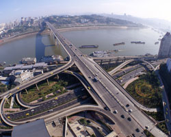

重庆市渝中区介绍
渝中区是中国西部唯一直辖市――重庆的中心城区，地处长江、嘉陵江汇流处，三面环水，西面通陆，为一东西向狭长半岛。半岛之上，高楼林立、市景繁荣，城在山中、山在水中，山为城、城乃山，如玉雕嵌半岛、若天街耀九重，是一座山川秀美、胜景迷人的山城、江城、不夜城。全区水陆域面积23.71平方公里，其中陆地面积18.54平方公里，常住人口70万，日均流动人口30万人次。
|  |
渝中区作为重庆的“母城”，三次建都、四次筑城，历史悠久，是巴渝文化、抗战文化、红岩文化的发祥地，是重庆文化的“根”和“源”。历经三千年风雨的“巴蔓子将军墓”、永载中国革命史册的“红岩村”、标志重庆的“人民解放纪念碑”，铅华洗尽，古风犹存，日久弥芳；洪崖滴翠、朝天汇流、浮图夜雨等巴渝胜景，罗汉寺、湖广会馆等名胜古迹，人民大礼堂、三峡博物馆等标志性文化设施，独具气势与神韵的山水半岛自然景观，卓尔繁华的现代都市风貌，传承文脉，蜚声中外。
渝中区作为新兴直辖市的金融中心、商贸中心、信息中心和文化中心，聚集了90%以上的国内商业银行、保险公司、证券公司驻渝总部以及所有的驻渝境外银行、保险机构，银行存、贷款余额分别占全市的1/4和1/3，是重庆金融机构最集中、金融活动最活跃的地区；高档商贸商务设施鳞次栉比，国内外知名品牌比邻而居，全区社会消费品零售总额占全市1/7强，是重庆最时尚、最繁华的地区；全市主要的邮电通信、新闻媒体、网络媒介和1/3以上的中介服务机构汇集区域，是重庆信息资源最富集、信息交流最迅捷的地区；基础设施配套完善、城市功能成熟完备、文化活动精彩纷呈，万商云集、人气鼎盛，是重庆最富吸引力、最具魅力的地区，是海内外投资中国西部的桥头堡及中转地。
面向未来，渝中区将按照科学发展观和构建社会主义和谐社会的要求，围绕贯彻落实胡锦涛总书记“314”总体部署，坚持服务强区、创新活区、人才兴区、实干立区的指导方针，大力推进效益渝中、魅力渝中、活力渝中、和谐渝中建设，全力打造长江上游地区现代服务业核心区和总部经济基地，努力实现2010年率先建成全面小康社会示范区、2020年率先实现基本现代化的宏伟目标。
组织结构
主办单位：
《福布斯》中文版
重庆市商业委员会
重庆市渝中区人民政府
承办单位：
重庆解放碑中央商务区管理委员会
特别协办：
重庆前景投资咨询有限公司
资料下载
 论坛议程下载
论坛议程下载
活动详情
活动时间：
2009年7月 23日（星期四）
8：30-17：30
活动地点：
重庆洲际酒店
活动规模：
200人
合作媒体
战略媒体联盟：
21世纪经济报道 21世纪商业评论 理财周报 中央人民广播电台经济之声 21世纪网
独家战略合作媒体：
新浪财经
首席门户网站支持：
网易财经
独家新媒体支持：
凤凰网
独家财经网站支持：
和讯
首席财经专业网站支持：
金融界